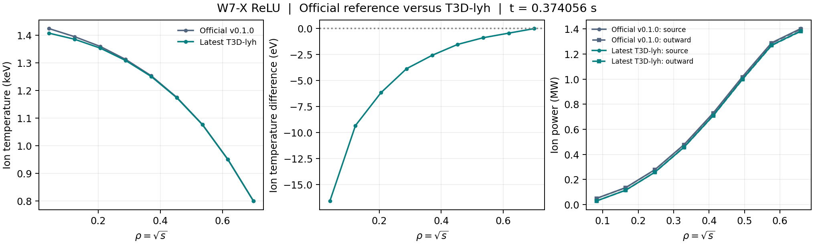

基准算例 / Wendelstein 7-X
W7-X ReLU 离子热输运
在相同的官方输入和 VMEC 平衡上重跑 T3D-lyh，与上游随附的官方回归数据对比，检验离子温度演化和离散功率守恒。
74a06df（v0.1.0）
维护版 d5ac1fe
固定 VMEC 几何
- 两版接受步数
- 8 步 终点均为 0.374056 s
- 最大离子温度差
- 16.57 eV 终态最内侧节点
- 共享界面不抵消量的绝对值
- 74.53 → 0 W 官方 → T3D-lyh
01 / CONFIGURATION
相同输入，只推进氢离子温度
输入 test-w7x-relu.in 与平衡 wout_w7x.nc 均与官方版本逐字节一致。这里不调用 GX、SFINCS 等外部通量求解器，也不启用维护版新增的文件通量模型。
| 设置 | 取值及含义 |
|---|---|
| 径向网格 | flux_label = "torflux"，ρ 为归一化环向磁通的平方根；9 个节点，8 个活动壳层。温度边界 ρ = 0.7，最外活动通量面 ρ = 0.658824。0.7 是计算截断，不是最后闭合磁面。 |
| 组分与初值 | 电子与氢离子密度固定；电子温度剖面固定，只推进 pH = nHTH。氢离子初始核心／边界温度 1.0／0.8 keV，电子 6.7／0.8 keV，密度 0.35／0.29 × 1020 m−3。 |
| 热通量 | model = "ReLU"，D_neo = 0；氢离子温度对数梯度阈值 0.1、斜率 1.2，电子及粒子通量斜率为零。磁轴净径向通量为零。 |
| 体热源与输出 | 只有电子–离子碰撞向氢离子传热；辅助粒子／能量源幅度为零，不启用 α 加热、辐射和湍流组分间能量交换。远程环境仅停用不可用的 ADIOS2/BP 输出，保留 NetCDF；未改物理与数值参数。 |
| 时间推进 | 归一化初始步长 dtau = 0.1（3.741 ms），t_max = 10，alpha = 1；Newton 阈值 0.01、容差 0.02、最多 3 次迭代。两版内部接受时刻不同，终点一致。 |
³⁄₂ ∂pH/∂t = −[1/V′(ρ)] ∂𝒬H/∂ρ + Scoll,H
𝒬H 是穿过整张磁面的热功率（MW），不是热流密度；Scoll,H 是局部体热源（MW/m³）。固定电子温度使电子背景相当于热库，本例不检验电子和离子总热能的自洽闭合。
02 / ACCEPTED STATES
维护版：热流、体热源和温度随时间的演化

最内侧节点的 TH 由 0.9993 keV 升至 1.4345 keV（116.0 ms），终态为 1.4067 keV；边界始终为 0.8 keV。最外活动面热功率由 0.3263 MW 上升，116.0 ms 时为 1.4612 MW，随后回到 1.3822 MW。离子升温同时缩小电子–离子温差，碰撞体热源整体减弱。
03 / OFFICIAL REFERENCE
同一物理时刻的官方对比
官方状态来自随附的 ref-w7x-relu.nc。两版的热功率、热源和储能诊断分别用各自的离散式在已接受剖面上同步重算，不直接把官方文件里未与末态同步的末行功率拿来相减。中间的时间轨迹按物理时间阅读，不能按接受步编号直接逐点相减。

| 终态指标 | 官方 v0.1.0 | T3D-lyh |
|---|---|---|
| 最内侧 TH（keV） | 1.423303 | 1.406735 |
| 活动域碰撞热源 Pcoll（MW） | 1.403188 | 1.384315 |
| 最外活动面热功率 𝒬out（MW） | 1.399212 | 1.382174 |
| 末步储能变化率 dWH/dt（kW） | 3.986471 | 2.140711 |
| 全域功率残差绝对值（W） | 10.8496 | 0.1170 |
| 内部面未抵消量（带符号，W） | −74.5305 | 0 |
终态两版的密度、电子温度和固定边界离子温度相同。差异主要关联 VMEC 近轴体积权重、共享通量面的离散方式，也包含不同的接受步历史和非线性迭代误差；这些因素未在本算例中逐项隔离。
全域残差定义为 |dWH/dt − (Pcoll − 𝒬out)|，用真实末步及前一步的变步长 BDF2 历史重算。全域残差和内部面抵消缺陷是不同指标。这里验证的是回归和数值功率守恒，不是 W7-X 放电实验预测精度。
04 / DATA & REPRODUCTION
数据与复现
- 全部 9 个状态，含初值： 官方 NetCDF · 维护版 NetCDF · 时间历史 CSV
- 维护版径向数据： 通量面 CSV · 碰撞热源和温度 CSV
- 终态比较： 温度剖面 CSV · 径向功率 CSV · 对照指标和输入哈希 JSON
- 原始配置： 官方输入 · 固定 VMEC 平衡 · 复现说明和变量字典
NetCDF 是去除运行环境元信息后整理的物理数据导出，time_s 使用秒，按 rho_node 与 rho_face 分开记录。它不是 T3D 的原生 restart 文件。
使用单独的输出目录，并确保其中 tests/data/wout_w7x.nc 指向所选源码快照里的平衡文件。维护版在依赖已安装时可这样运行：
t3d test-w7x-relu.in -l w7x-relu.out将结果与官方终点按相同的活动域与功率定义比较；不要把固定温度的边界节点计入源体积分。